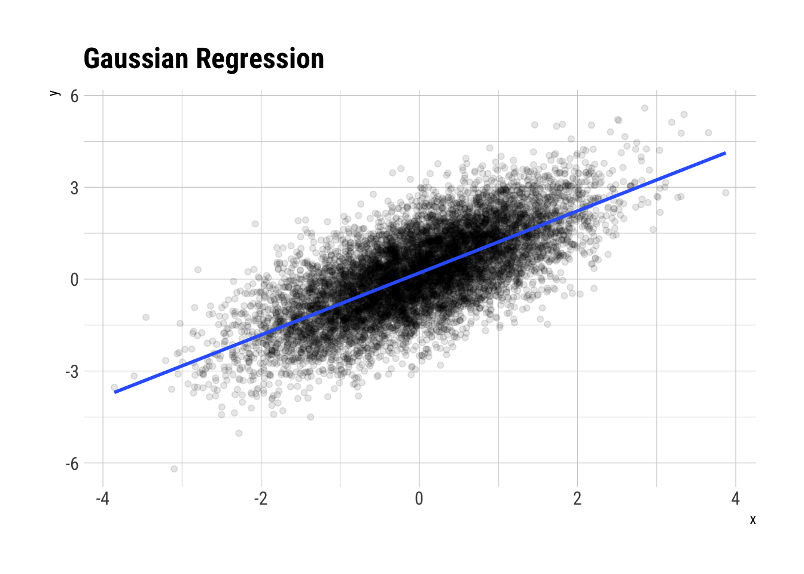
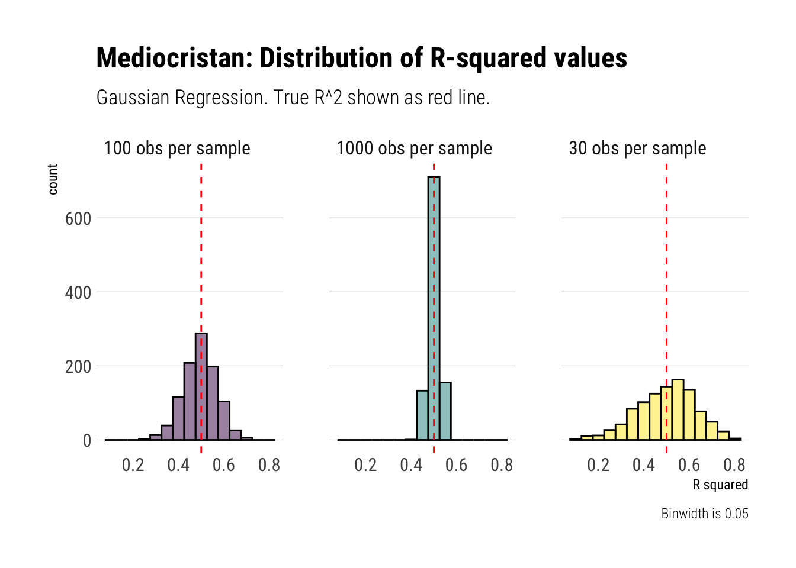
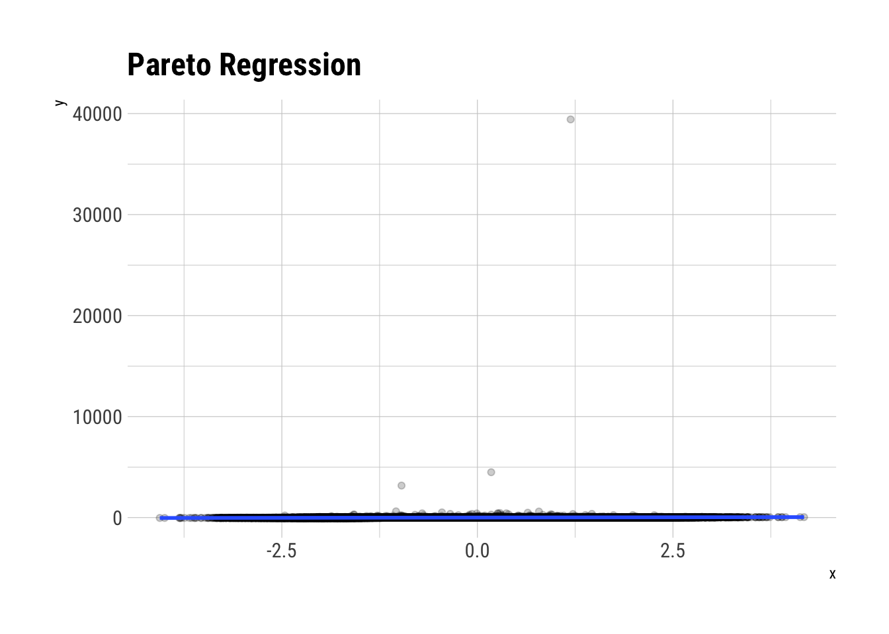
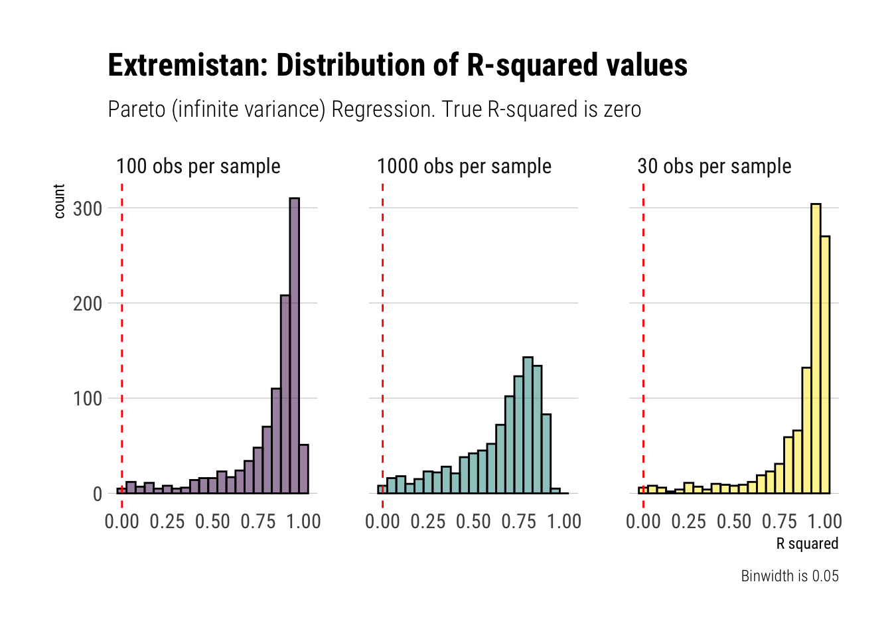

# simulate
n <- 10^6
x <- rnorm(n)
y <- rnorm(n, mean = 0.2 + 1 * x)R-squared and Fat-tails
This post continues to explore how common statistical methods are unreliable and dangerous when we are dealing with fat-tails. So far, we have seen how the distribution of the sample mean, PCA and sample correlation turn into pure noise when we are dealing with fat-tails. In this post, I’ll show the same for \(R^2\) (i.e., coefficient of determination). Remember, it is a random variable that we are estimating and thefore has its own distribution.
In short, the goal is to justify with simulations Nassim Taleb’s conclusion in his latest technical book regarding R-squared:
When a fat tailed random variable is regresed against a thin tailed one, the coefficient of determination \(R^2\) will be biased higher, and requires a much larger sample size to converge (if it ever does)
Gameplan
I’ll follow the same gameplan as usual: explore with Monte-Carlo the distribution of our estimator in both Mediocristan and Extremistan.
Mediocristan
Assume the usual scenario in a Gaussian regression: Gaussian errors.
Let’s plot (some of ) the data:
data.frame(x, y)[sample(n, 10^4), ] %>%
ggplot(aes(x, y)) +
geom_point(alpha = 0.1) +
geom_smooth(method = "lm", se = FALSE) +
hrbrthemes::theme_ipsum_rc() +
labs(title = "Gaussian Regression")
glue::glue("The correlation coefficient is: {round(cor(x,y), 2)}")The correlation coefficient is: 0.71Then, the \(R^2\) should be the squared of this: \(0.50\)
fit <- lm(y ~ 1 + x, data = data.frame(x, y))
summary(fit)
Call:
lm(formula = y ~ 1 + x, data = data.frame(x, y))
Residuals:
Min 1Q Median 3Q Max
-4.8839 -0.6735 0.0003 0.6743 4.7843
Coefficients:
Estimate Std. Error t value Pr(>|t|)
(Intercept) 0.1994577 0.0009997 199.5 <2e-16 ***
x 0.9994888 0.0009987 1000.8 <2e-16 ***
---
Signif. codes: 0 '***' 0.001 '**' 0.01 '*' 0.05 '.' 0.1 ' ' 1
Residual standard error: 0.9997 on 999998 degrees of freedom
Multiple R-squared: 0.5004, Adjusted R-squared: 0.5004
F-statistic: 1.002e+06 on 1 and 999998 DF, p-value: < 2.2e-16broom::glance(fit)$r.squared[1] 0.5004092Which indeed it is1. Let’s create a Monte-Carlo function to simulate smaller samples and check the convergence of the \(R^2\).
simulate_R_two <- function(n = 30) {
x <- rnorm(n)
y <- rnorm(n, mean = 0.2 + 1 * x )
fit <- lm(y ~ 1 + x, data = data.frame(x, y))
r2 <- broom::glance(fit)$r.squared
data.frame(r_squared = r2)
}
rerun(1000, simulate_R_two()) %>%
bind_rows() -> r_squareds_30
rerun(1000, simulate_R_two(n = 100)) %>%
bind_rows() -> r_squareds_100
rerun(1000, simulate_R_two(n = 1000)) %>%
bind_rows() -> r_squareds_1000Let’s plot the results
data.frame(sim = 1:1000, r_squareds_30, r_squareds_100, r_squareds_1000) %>%
rename(sample_30 = r_squared,
sample_100 = r_squared.1,
sample_1000 = r_squared.2) %>%
pivot_longer(-sim, names_to = "sample", values_to = "r_squared") %>%
mutate(sample = str_extract(sample, "\\d+"),
sample = glue::glue("{sample} obs per sample"),
sample = factor(sample)) %>%
ggplot(aes(r_squared, fill = sample)) +
geom_histogram(color = "black", alpha = 0.5, binwidth = 0.05) +
geom_vline(aes(xintercept = 0.5), linetype = 2, color = "red") +
facet_wrap(~sample) +
scale_fill_viridis_d() +
hrbrthemes::theme_ipsum_rc(grid = "Y") +
theme(legend.position = "none") +
labs(caption = "Binwidth is 0.05",
title = "Mediocristan: Distribution of R-squared values",
subtitle = "Gaussian Regression. True R^2 shown as red line.",
x = "R squared")
Therefore, when we are dealing with randomness coming from Mediocristan, we can reliably use our estimates of the R-squared. They converge at a good pace toward the true vlue.
Extremistan
Now, let’s swtich pace and sample from Extremistan. Imagine then, our same simulation as before. However, instead of our noise coming from a Gaussian, our noise will come from a Pareto with tail exponent of \(1.5\) (theoretical mean exists but higher moments do not). Let’s simulate:
n <- 10^5
x <- rnorm(n)
pareto_errors <- (1/runif(n)^(1/1.5))
y <- 0.2 + 10*x + pareto_errorsBefore we plot, let’s think through what exactly is \(R^2\): it defines the proportion of the total variance of our outcome variable that is explained by our model. However, when the errors are Pareto distributed, our outcome variable is also Pareto distributed (with the same tail exponent). Therefore, the outcome variable won’t have a theoretical variance. That is, it will have an infinite variance. As you can imagine, no matter what variance the model explains, it is going to be tiny in comparison to the total variance. Thus, we arrive at the following: the true \(R^2\) is zero. That is: \(E[R^2] = 0\)
data.frame(x, y) %>%
ggplot(aes(x, y)) +
geom_point(alpha = 0.2) +
geom_smooth(method = "lm", se = FALSE) +
hrbrthemes::theme_ipsum_rc() +
labs(title = "Pareto Regression")
fit <- lm(y ~ 1 + x, data = data.frame(x, y))
summary(fit)
Call:
lm(formula = y ~ 1 + x, data = data.frame(x, y))
Residuals:
Min 1Q Median 3Q Max
-4 -2 -2 -1 39405
Coefficients:
Estimate Std. Error t value Pr(>|t|)
(Intercept) 3.5633 0.3988 8.935 <2e-16 ***
x 10.4619 0.3993 26.204 <2e-16 ***
---
Signif. codes: 0 '***' 0.001 '**' 0.01 '*' 0.05 '.' 0.1 ' ' 1
Residual standard error: 126.1 on 99998 degrees of freedom
Multiple R-squared: 0.00682, Adjusted R-squared: 0.00681
F-statistic: 686.6 on 1 and 99998 DF, p-value: < 2.2e-16Even with \(10^5\) observations, we are way off mark here. This is the same problem as we had with the other estimators. There isn’t enough data. As Taleb says:
\(R^2\) … is a stochastic variable that will be extremely sample dependent, and only stabilize for large n, perhaps even astronomically large n
To show this, let’s create with Monte-Carlo simulations the distribution of the sample R-squared:
simulate_R_two <- function(n = 30) {
x <- rnorm(n)
pareto_errors <- (1/runif(n)^(1/1.5))
y <- 0.2 + 10*x + pareto_errors
fit <- lm(y ~ 1 + x, data = data.frame(x, y))
r2 <- broom::glance(fit)$r.squared
data.frame(r_squared = r2)
}
rerun(1000, simulate_R_two()) %>%
bind_rows() -> r_squareds_30
rerun(1000, simulate_R_two(n = 100)) %>%
bind_rows() -> r_squareds_100
rerun(1000, simulate_R_two(n = 1000)) %>%
bind_rows() -> r_squareds_1000Let’s plot our results:
data.frame(sim = 1:1000, r_squareds_30, r_squareds_100, r_squareds_1000) %>%
rename(sample_30 = r_squared,
sample_100 = r_squared.1,
sample_1000 = r_squared.2) %>%
pivot_longer(-sim, names_to = "sample", values_to = "r_squared") %>%
mutate(sample = str_extract(sample, "\\d+"),
sample = glue::glue("{sample} obs per sample"),
sample = factor(sample)) %>%
ggplot(aes(r_squared, fill = sample)) +
geom_histogram(color = "black", alpha = 0.5, binwidth = 0.05) +
geom_vline(aes(xintercept = 0), linetype = 2, color = "red") +
facet_wrap(~sample) +
scale_fill_viridis_d() +
hrbrthemes::theme_ipsum_rc(grid = "Y") +
theme(legend.position = "none") +
labs(caption = "Binwidth is 0.05",
title = "Extremistan: Distribution of R-squared values",
subtitle = "Pareto (infinite variance) Regression. True R-squared is zero",
x = "R squared")
Conclusion
As Taleb reminds us, \(R^2\) is a stochastic variable. When the variance of our outcome variable approaches infinity, the \(E[R^2] \to 0\). However, to get this result in sample we must get a good estimate of the variance of our outcome variable in the first place. As we have seen, the Law of Large Numbers is way too slow to be useful when dealing with fat-tailed variables. Therefore, to get a good estimate of \(R^2\) we will need an astronomically large sample size; otherwise, we will be estimating noise.
To conclude, \(R^2\) should not be used when we are dealing in Extremistan. Whatever we estimate, it’s going to be pure noise. Even when the variance is not undefined, it will still be biased upwards.
Footnotes
Notice that here I am doing a circular argument because I know that \(R^2\), in Mediocristan, can be reliably estimated from this simulation. It is only for explanatory purposes (and out of lazyness) that I haven’t done the “right thing” and use boring algebra to derive \(R^2\)↩︎